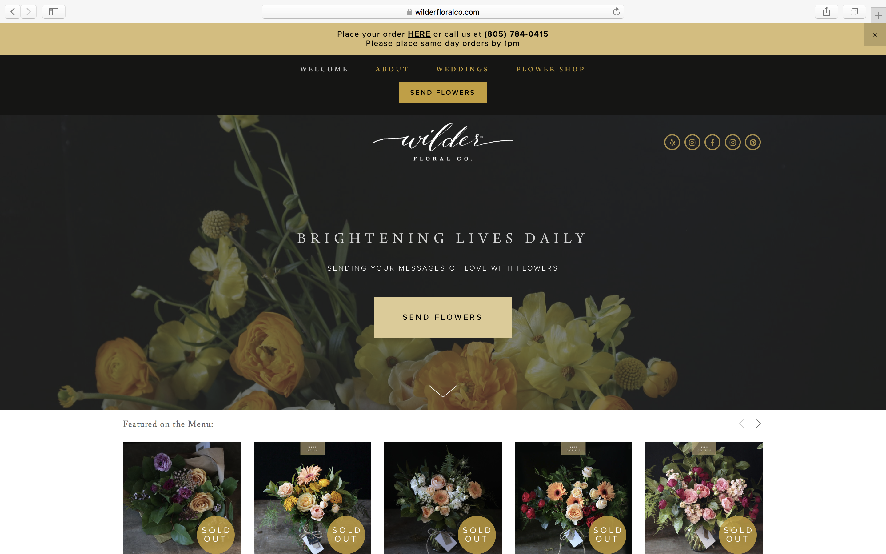
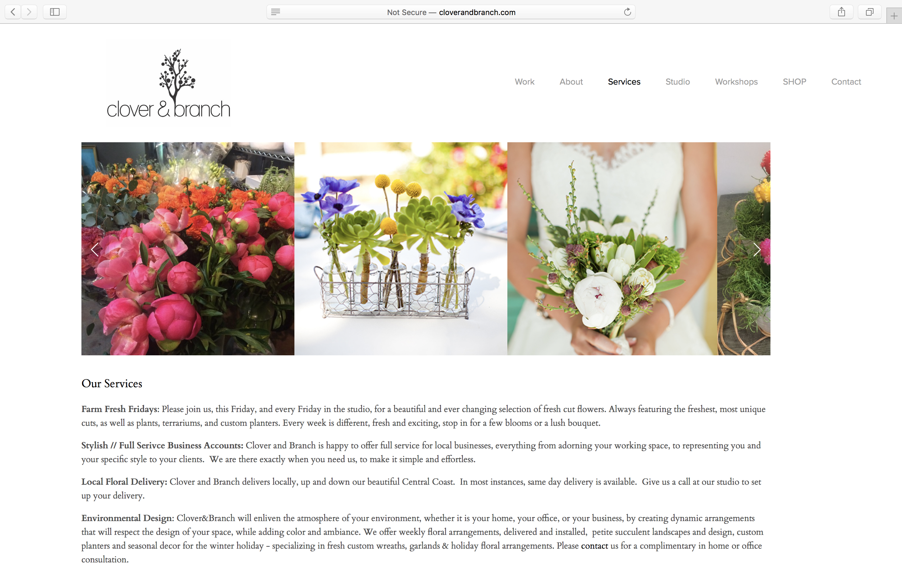
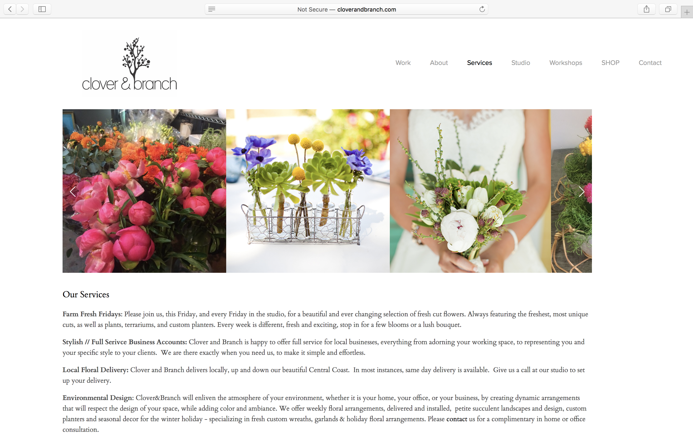

Final project proposal
Introduction
Beautiful Blossoms
We are a small local flower shop in the San Luis Obispo area. Our flowers are perfect for everyday occasions, and we sell flowers by the stem. We are the perfect come and go shop for your everyday needs. Our mission is to make days brighter and happier, one flower at a time!
Target audience
We have noticed that most flower shops in general sell custom created bouquets that need to be ordered days and even weeks in advance. Although we do have the capability to create custom jobs like that, our primary products are locally grown flowers that are sold by the stem. Therefore, our target audience are middle class individuals who tend to buy flowers.
We are marketing our flowers to be inexpensive and affordable to anyone for any event. Whether it be college students looking to brighten a friend's day or a mother looking for flowers to bring to their daughter’s dance recital – Beautiful Blossoms has exactly what you need!
Comparative analysis
Wilder Floral CO

Clover and Branch
 

Noonan's Wine Country Designs


Website content
Home
Making your day brighter, one blossom at a time.
Beautiful flowers sold by the stem.
[Image of a bouquet of flowers, these flowers will be bright and full. There will be a black, white or neutral colored background to give the image a clean and simple feel. This image will draw people in and captivate them to buy flowers. ]
Flowers
Whatever your occasion, Beautiful Blossoms has what you need.
All flowers are sold at $1 a stem, and roses are sold at $1.50. There is no minimum purchase of flowers. Feel free to mix and match any flower you would like to create an entirely custom bouquet. No need to order in advance, we always carry a stock of various flowers at our location. If you have a specific stem in mind, please call ahead to make sure we have them.
Flowers that we always carry: roses, sunflowers, daisies, tulips and a variety of greens to create a perfect custom bouquet.
[Image of individual stems of flowers. Image of our storefront (with various flowers to choose from). Image of a custom bouquet, with different flowers and greens. ]
About
Every flower, sold by the stem.
Beautiful Blossoms is a local, San Luis Obispo flower shop offering affordable and entirely customizable flower and bouquet options. We believe that flowers make every single occasion and we are here to provide them!
All of our flowers are grown in local San Luis Obispo and Atascadero farms and are freshly delivered to our location at the beginning of each week. We believe in supporting local growers and sharing their products with our community.
Our mission is to make flowers affordable to all. We keep the prices of our flowers low that way everyone can enjoy the gift of giving and receiving flowers from friends, family and loved ones.
Make a day. Give someone flowers today.
[Image of a sunflower bouquet. Image of a rose bouquet.]
Conatct
Our address: 534 Higuera St, San Luis Obispo, CA
Hours: 12 – 5 p.m. daily
Phone: (805) 929 – 1234
Make a day. Give someone flowers today.
[Image of white rose bouquet with green leaves. Image of tulip bouquet. ]